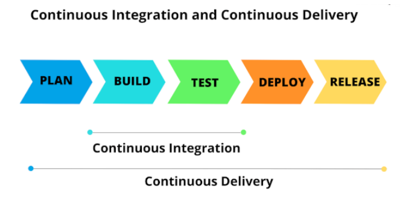

Continuous Delivery
What is Continous Delivery ?

Continous Delivery (CD)is a software development practice where code changes are automatically prepared for release to production after passing the necessary automated tests. While Continous Integration (CI) ensures that code is regularly built and tested, Continuous Delivery extends that process by ensuring that the code is always in a deployable state. The goal of CD is to enable frequent, reliable, and low-risk software releases.
Why Continous Delivery ?
Continuous Delivery (CD) offers numerous advantages for software development teams, especially in today's fast-paced and competitive environment. It allows teams to deliver high-quality software quickly and reliably, helping businesses respond to customer needs, market changes, and emerging opportunities more effectively. Here are the key reasons to implement Continuous Delivery:
- Faster Time to Market: CD enables rapid delivery of new features and fixes.
- Reduced Risk: Smaller, frequent releases with automated testing lower the chance of deployment errors.
- Improved Code Quality: Automated pipelines ensure that only tested, stable code reaches production.
- Higher Efficiency: Automation of repetitive tasks frees up developers for higher-value work.
- Enhanced Customer Satisfaction: Regular updates and faster bug fixes lead to happier users.
- Better Collaboration:CD fosters a culture of shared responsibility and DevOps practices.
Key Concepts
Automated Testing and Validation:
- CD ensures that the code is always in a state where it could be deployed to production at any moment. This is achieved by running continuous automated tests and validation steps on every commit.
Always Deployable Code:
- CD ensures that the code is always in a state where it could be deployed to production at any moment. This is achieved by running continuous automated tests and validation steps on every commit.
Deployment Automation:
- While actual deployment to production can be a manual or automated process, all the steps leading up to the deployment (building, testing, packaging) are automated to ensure that the application can be deployed reliably at any time.
Faster and Safer Releases:
- CD enables teams to release new features, bug fixes, or updates frequently and confidently, reducing the lead time from development to production.